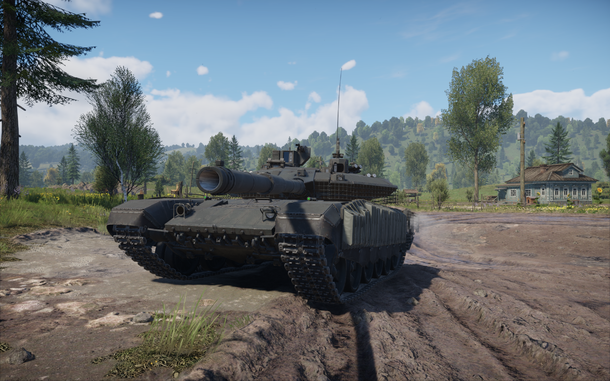
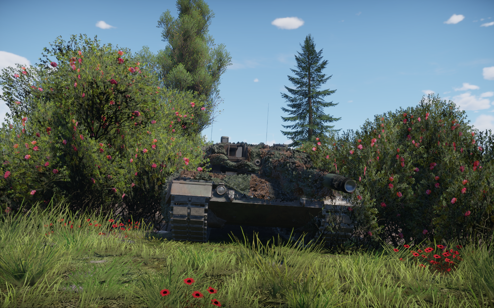
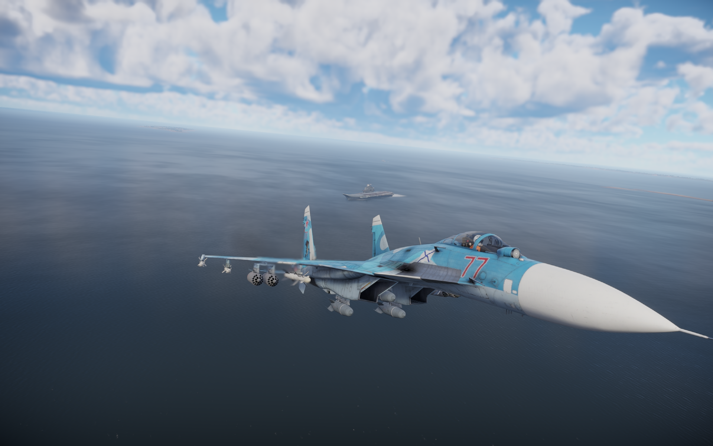

War Thunder



War Thunder — это масштабная многопользовательская игра, посвященная боевой технике, авиации, бронетехнике и флоту.
Здесь можно сойтись в яростных сражениях на земле, в воздухе и на воде, используя детально воссозданные реальные машины различных стран и исторических периодов.
Игра предлагает широкий спектр режимов, от аркадных до реалистичных и симуляторных, что позволяет каждому игроку найти подходящий стиль игры. Можно играть как одному так и с друзьями в отряде, используй преимущества карты, горы, кусты, водоемы.
Тут есть множество техники на выбор начиная с времен Второй мировой войны, заканчивая нынешними временами.В одном бою может сойтись и танки и самолет или же самолеты и флот.
Единственный минус - это долгая прокачка, тут тебе прийдется потратить от 700 часов игры что бы дойстичь самых лучших танков, ну или купить премиум аккаунт и технику.